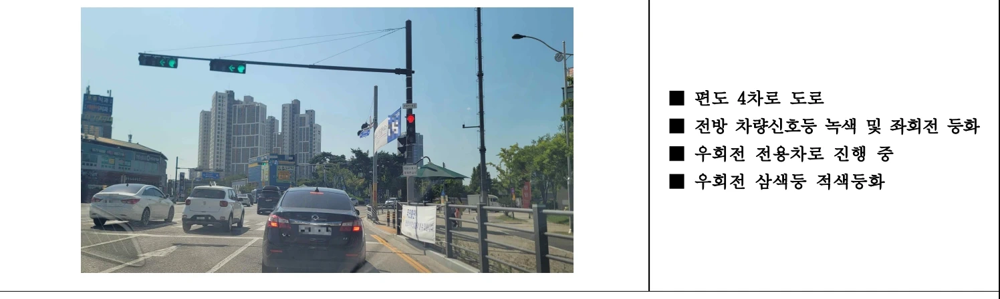

693. Which of the following are the safest ways to drive in the given situation? (Select TWO)

- ①When intending to drive straight while driving on the right turn only lane, you may change lanes in the section marked with solid white lines.
- ②Even if the right-turn signal is red, you can make the turn if there are no pedestrians on the crosswalk.
- ③The driver must stop as the right-turn signal is red, and turning is allowed only when the light changes to green.
- ④If intending to turn right while traveling in a straight lane, turning right is allowed in a lane other than the right turn only lane.
- ⑤Even if the right-turn signal is green, you should turn while ensuring safety as there can be pedestrians.
Show answer
Answer
③ The driver must stop as the right-turn signal is red, and turning is allowed only when the light changes to green.
⑤ Even if the right-turn signal is green, you should turn while ensuring safety as there can be pedestrians.
Reference
When you want to turn right in front of a three-color right turn light, you must proceed according to the signal. Even if the three-color right turn light is a green arrow, you must check its safety as there may be pedestrians crossing late. If there is a right turn lane, you must turn right along that lane, and changing directions is restricted in the solid white line section.
Reference text is a machine translation for study.